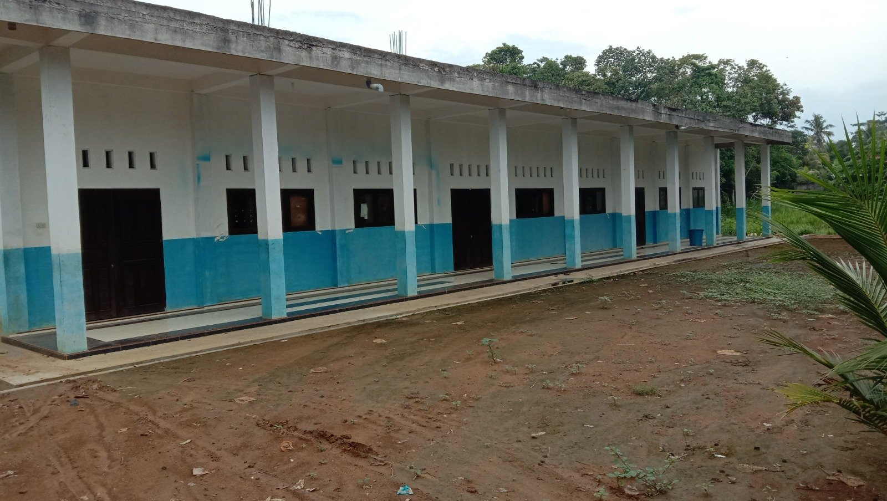
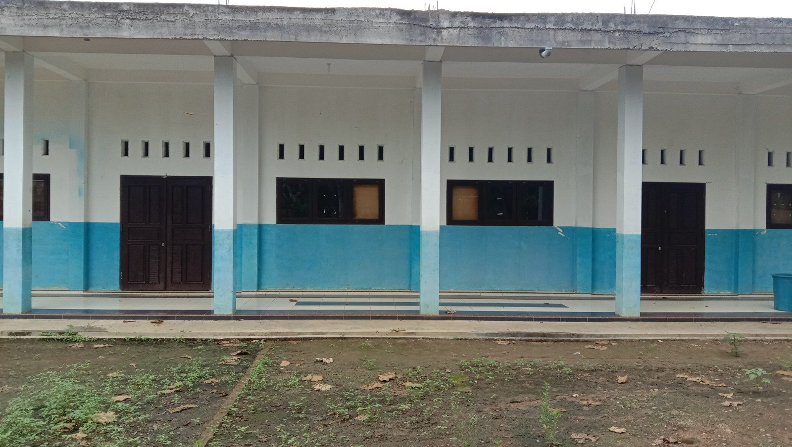
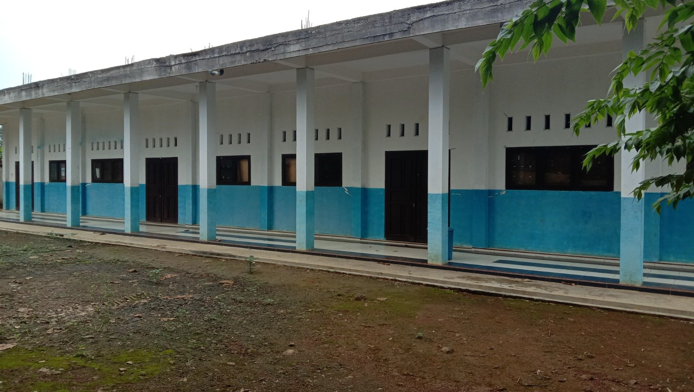
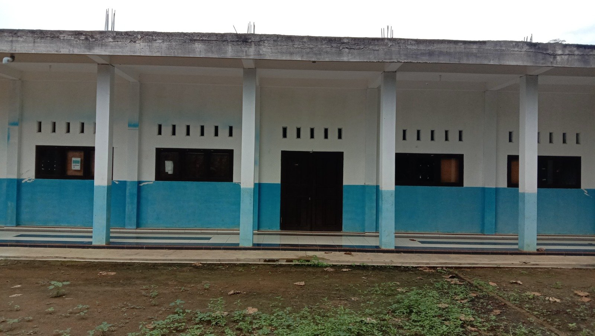

Memadukan keunggulan kurikulum formal Kementerian Agama RI dengan keteguhan tradisi Salafiyah kajian Kitab Kuning, mencetak kader bangsa yang berilmu amaliyah, bertakwa ilahiyah, dan mandiri dengan life skills terapan.

Assalamu’alaikum Warahmatullahi Wabarakatuh.
Selamat datang di portal resmi Madrasah Aliyah Darun Najah Sambikarto. Lembaga ini hadir sebagai wujud ikhtiar suci melahirkan generasi yang tidak hanya mahir dalam sains dan teknologi, namun juga memiliki kedalaman batin, ketakwaan, serta keluhuran budi pekerti sebagaimana diajarkan oleh para ulama Salafus Sholihin.
Dengan memadukan pembinaan asrama pesantren dan pembelajaran formal madrasah, kami bertekad membekali para santri dengan ilmu yang berbuah amal nyata (Ilmu Amaliyah) dan ketakwaan yang berorientasi keilahian (Taqwa Ilahiyah) yang siap menjawab tantangan zaman.
Perjalanan khidmah dakwah dan pendidikan Islam di Sambikarto yang dirintis dengan ketulusan para kiai hingga melahirkan Madrasah Aliyah berprestasi.
Bermula dari kegiatan Diniyah Salafiyah bertempat di Masjid Istiqomah Sambikarto. Santri dan anak-anak desa dibina membaca Al-Qur'an dan dasar-dasar kitab kuning oleh para tokoh agama setempat dengan semangat swadaya penuh keikhlasan.
Diprakarsai oleh KH. Sahlan Abdulloh dan KH. Abdul Ghofar, S.Pd.I melalui pembebasan dan wakaf tanah. Lembaga ini resmi menyandang nama Pondok Pesantren Darun Najah (PPDN) sebagai benteng syiar Islam dan wadah penggemblengan santri.
Menjawab kebutuhan pendidikan formal bagi para santri, kemitraan strategis dengan NGO Australia melahirkan berdirinya MTs Satu Atap Darun Najah, menyediakan fasilitas ruang belajar yang representatif dan terstruktur.
Pada 16 April 2016, Madrasah Aliyah Darun Najah resmi didirikan di bawah Yayasan Pendidikan Pondok Pesantren Darun Najah yang diketuai oleh Suparno, S.Pd.I. Menjadi jenjang kelanjutan menengah atas berbasis pesantren terkemuka di Sekampung, Lampung Timur.
Landasan filosofis yang membimbing setiap langkah pembinaan santri dan penyelenggaraan pendidikan di MA Darun Najah Sambikarto.
“Mewujudkan MA Darun Najah yang berhaluan Ahlussunnah wal Jama'ah sebagai basis lembaga pendidikan IPTEK, keislaman, kebangsaan, kebudayaan, dan kesenian.”
Meningkatkan kualitas dan pemerataan layanan proses pembelajaran bermutu tinggi dengan mengintegrasikan ilmu pengetahuan umum dan nilai-nilai Islami.
Menyediakan dan mengoptimalkan sarana prasarana pendidikan, laboratorium, asrama, dan perpustakaan yang memadai dan berdaya guna tinggi bagi santri.
Mengembangkan potensi, bakat, dan keterampilan hidup (life skills) peserta didik melalui kegiatan ekstrakurikuler, kewirausahaan, serta kepemimpinan.
Membudayakan praktik ibadah dan tradisi amaliyah Salafus Sholihin yang bersumber dari aqidah Ahlussunnah wal Jama'ah An-Nahdliyah.
Mewujudkan manajemen madrasah yang transparan, partisipatif, profesional, akuntabel, dan terhubung harmonis dengan wali murid serta masyarakat luas.
Melahirkan lulusan yang kokoh aqidah, luhur pekerti, cakap teknologi, mandiri berusaha, serta siap melanjutkan studi ke perguruan tinggi unggulan.
Integrasi harmonis antara kurikulum standar nasional Kementerian Agama dengan kedalaman khazanah Salafiyah Diniyah Pondok Pesantren.
Pendalaman komprehensif mata pelajaran standar Kemenag yang meliputi Al-Qur'an Hadits, Akidah Akhlak, Fiqih, dan Sejarah Kebudayaan Islam (SKI).
Penyajian sains, matematika, sosiologi, geografi, dan ekonomi dengan pendekatan Kurikulum Merdeka yang kontekstual dan analitis.
Pembekalan penguasaan perangkat lunak perkantoran, desain grafis, internet cerdas, dan etika komunikasi digital modern.
Kunci utama membaca dan membedah literatur klasik Islam dengan metodologi bertahap dan pengulangan (sorogan & bandongan).
Mengkaji hukum-hukum syariat ibadah dan muamalah harian secara detail berpedoman pada kitab ulama muktabar.
Penempaan adab penuntut ilmu, pembiasaan sholat berjamaah, wirid rotib, serta adab terhadap orang tua, guru, dan sesama.
Bimbingan perbaikan bacaan (makharijul huruf & tajwid) serta program hafalan juz pilihan (Juz 30, Surat-surat Fadhilah, hingga program juz bertahap).
Pengembangan keterampilan percakapan bahasa Arab praktis untuk membiasakan santri berinteraksi di lingkungan madrasah dan asrama.
Pelatihan speaking dan basic grammar bahasa Inggris agar para santri memiliki wawasan global dan percaya diri di era internasional.
Wadah pengembangan minat santri untuk mencetak pribadi yang berprestasi, kreatif, tangguh, dan mandiri secara keterampilan.
Melatih olah vokal sholawat, teknik pukulan rebana Al-Banjari, dan memeriahkan peringatan hari besar Islam.
Keterampilan menulis huruf Arab indah (Khat Tsuluts, Naskhi, Diwani) untuk ajang perlombaan MTQ dan dekorasi.
Pelatihan mengetik cepat, administrasi digital, dan kreasi konten grafis untuk dakwah maupun media sosial.
Pelatihan dasar niaga santri, budidaya tanaman tepat guna, dan keterampilan pembuatan produk kreatif bernilai jual.
Membentuk kedisiplinan, kekompakan, survival alam terbuka, dan kepedulian sosial tinggi melalui kegiatan kepramukaan.
Olahraga seni bela diri warisan leluhur untuk menjaga kebugaran jasmani, ketangkasan diri, dan mental pejuang.
Penyaluran bakat olahraga atletik, kekompakan tim, dan keikutsertaan dalam turnamen antarmadrasah se-Kabupaten.
Kaderisasi kepemimpinan santri, tata kelola rapat, kepanitiaan acara madrasah, dan public speaking kepemudaan.
Fasilitas kampus terpadu yang nyaman, tenang, dan kondusif untuk mendukung kegiatan belajar mengajar santri secara optimal.
Ruang belajar berpenerangan alami dengan selasar kokoh berlantai keramik yang bersih dan nyaman.

Dilengkapi ventilasi udara berjenjang, jendela kaca ganda, serta pintu kayu jati peredam kebisingan.

Deretan gedung belajar yang tersusun rapi di area hijau Sambikarto bebas polusi perkotaan.

Area lapang di depan ruang kelas untuk pelaksanaan apel, senam pagi santri, dan latihan kepanduan.
Mari bergabung bersama keluarga besar MA Darun Najah Sambikarto. Pendaftaran praktis, cepat, dan terhubung langsung ke panitia via WhatsApp resmi.
Lengkapi formulir minat calon santri di laman ini untuk terhubung langsung ke WhatsApp panitia.
Panitia akan mengonfirmasi pendaftaran Anda dan mengirimkan tanda bukti pendaftaran awal.
Uji kompetensi membaca Al-Qur'an dan wawancara peminatan bakat bagi santri serta wali murid.
Penyelesaian administrasi santri baru, pembagian seragam madrasah, dan penempatan asrama pondok.
Data yang Anda isi otomatis disusun menjadi pesan WhatsApp resmi ke nomor panitia 0856-5897-3426.
Temukan jawaban cepat seputar sistem asrama, biaya pendidikan, kurikulum, dan kehidupan santri di MA Darun Najah.
MA Darun Najah menyediakan dua opsi fleksibel. Sangat disarankan bagi siswa untuk tinggal di asrama Pondok Pesantren Darun Najah (PPDN) agar pembinaan ibadah dan kajian kitab kuning berjalan maksimal 24 jam. Namun, bagi santri yang berdomisili di sekitar Desa Sambikarto dan Sekampung diperbolehkan memilih jalur non-asrama (pulang pergi).
Lulusan MA Darun Najah memperoleh Ijazah Resmi Kementerian Agama (Kemenag RI) yang diakui penuh untuk melanjutkan ke Perguruan Tinggi Negeri (PTN), UIN/IAIN, PTS, maupun kedinasan, serta dilengkapi Syahadah / Ijazah Pondok Pesantren tanda tamat mengaji kitab kuning dan tahsin Al-Qur'an.
Biaya pendidikan di MA Darun Najah dirancang sangat terjangkau dengan prinsip gotong-royong demi pemerataan pendidikan umat. Tersedia pula beasiswa khusus bagi santri berprestasi dan santri yatim/dhuafa. Rincian tabel biaya lengkap dapat dikonsultasikan via WhatsApp panitia di 0856-5897-3426.
Ya, MA Darun Najah menerima siswa pindahan dari SMA/SMK/MA lain selama kuota rombongan belajar masih tersedia dan melampirkan surat mutasi resmi, raport semester sebelumnya, serta lolos tes penempatan baca Al-Qur'an.
Selain pembinaan akhlak dan kitab kuning, santri dibekali keterampilan terapan meliputi penguasaan komputer dan administrasi digital, seni kaligrafi & hadroh, kepanduan pramuka, serta wirausaha mandiri agar siap berdikari setelah lulus.
Kampus MA Darun Najah berlokasi strategis di Jl. Raya Bumi Agung, Desa Sambikarto, Kecamatan Sekampung, Kabupaten Lampung Timur. Akses jalan sangat mudah dilalui kendaraan roda dua maupun roda empat dari arah Kota Metro maupun Sukadana.
Kami siap melayani silaturahmi calon wali santri dan masyarakat luas. Silakan hubungi narahubung resmi kami atau kunjungi kampus madrasah.
Jl. Raya Bumi Agung, Desa Sambikarto, Kecamatan Sekampung, Kabupaten Lampung Timur, Provinsi Lampung, Kode Pos 34182
Senin - Kamis : 07.30 - 14.00 WIB
Jum'at : 07.30 - 11.30 WIB
Sabtu : 07.30 - 13.30 WIB
Informasi resmi dan surat menyurat kedinasan:
madarunnajah.sambikarto@gmail.com
Kabupaten Lampung Timur, Lampung 34182